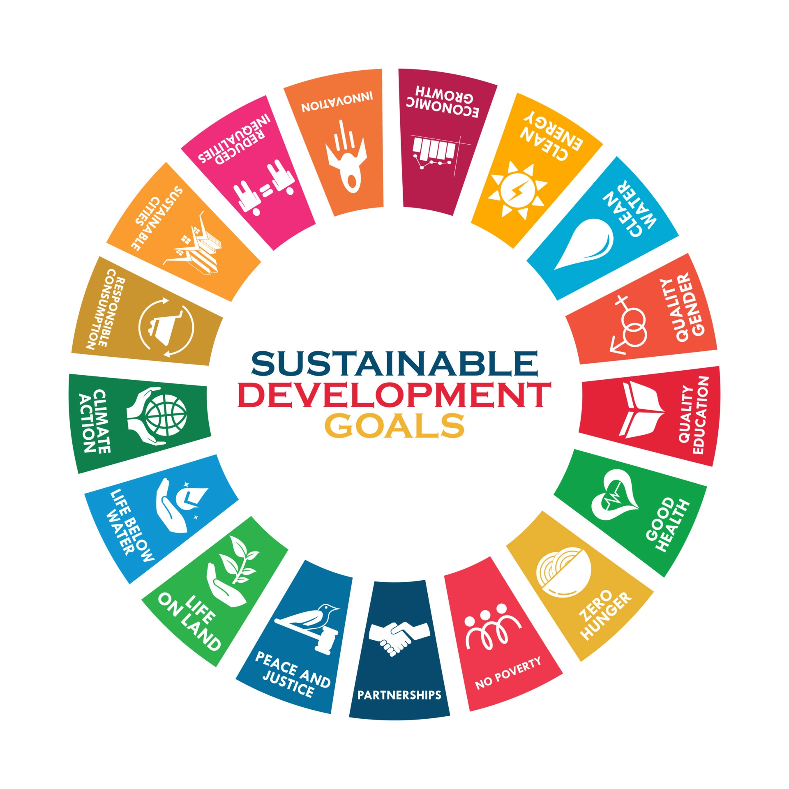

Introduction
Information and Communication Technologies (ICT) refers to digital technologies that are used to create, store, process, and exchange information. ICT has become an integral part of our daily lives and has the potential to contribute to sustainable development. Sustainable development is development that meets the needs of the present without compromising the ability of future generations to meet their own needs. It aims to achieve economic growth, social development, and environmental protection. Therefore, ICT for sustainable development is the use of digital technologies to promote sustainable development.
Read moreSustainable Development and its types
Sustainable development is a concept that aims to meet the needs of the present without compromising the ability of future generations to meet their own needs. It is a balance between economic growth, social development, and environmental protection. The three dimensions of sustainable development are:
Read moreInitiatives
There are numerous sustainable development initiatives that utilize ICT to achieve their goals. Some examples include:
Read moreRole, Benefits and Contributions
ICT (Information and Communication Technology) plays a crucial role in sustainable development by providing innovative solutions to the challenges faced by societies today. The potential benefits of using ICT for sustainable development include:
Read moreCase Studies and their impacts
Here are three case studies of successful ICT initiatives for sustainable development:
Read morePolicies and Strategies
There are various policies and strategies that can be implemented to promote the use of ICT for sustainable development. Here are some examples:
Read more